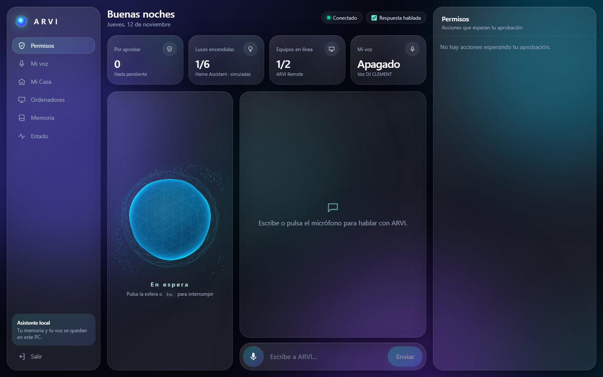
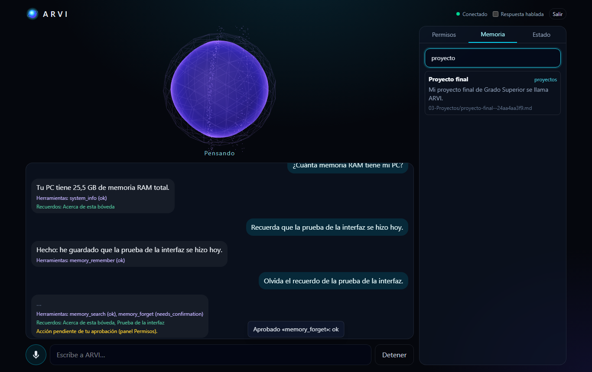
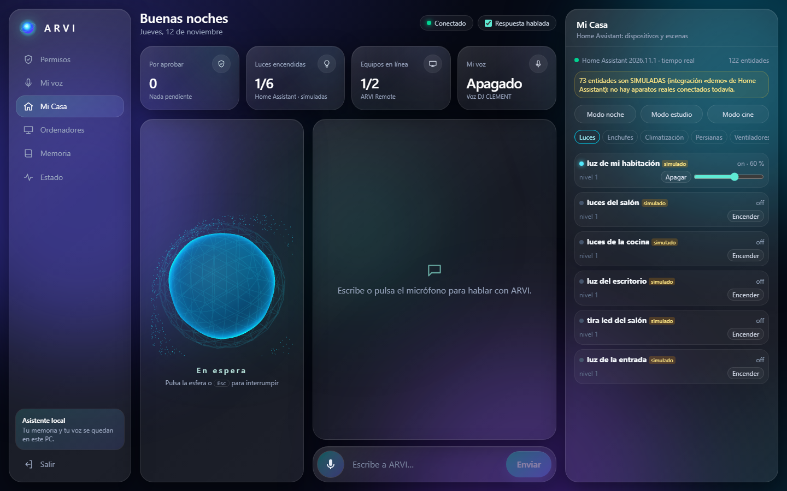
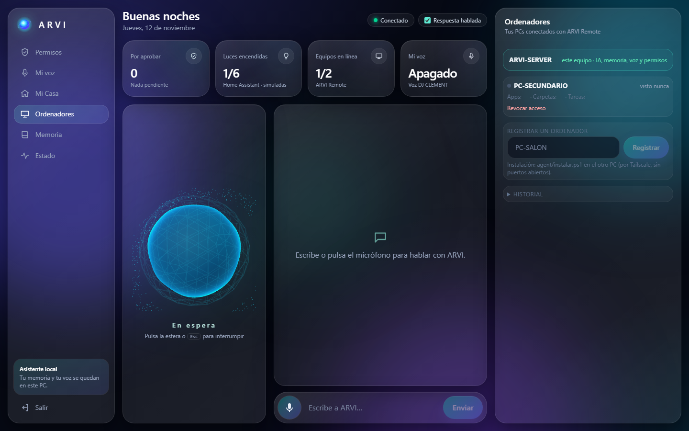

Un asistente de voz que vive en tu ordenador
ARVI escucha, recuerda lo que le importa a tu trabajo y actúa sobre tu equipo, pero solo con los permisos que tú le das. Esta es su documentación completa: desde la idea hasta las pruebas.
Versión de entrega · 12 de noviembre de 2026. Lo que aún depende del alumno aparece marcado como PENDIENTE en la memoria.
Demostración con los cuatro estados de la interfaz real
Qué pasa cuando le hablas
Seis pasos entre tu voz y su respuesta. Pulsa uno para ver qué hace y dónde está explicado.
Lo que hace posible
Cada pieza tiene su capítulo, con el diseño, el código y las pruebas que lo respaldan.
Voz local, con respaldo
Reconocimiento y síntesis en tu ordenador con VoiceStudio. Si falla, la nube toma el relevo sin que pierdas la conversación.
Leer el capítuloMemoria que no se olvida
Una bóveda de Obsidian con búsqueda de texto completo. Tu memoria y tu voz se quedan en este PC.
Leer el capítuloCuatro niveles de permisos
El servidor decide qué puede hacer cada herramienta. Lo delicado exige tu confirmación.
Leer el capítuloAutomatizaciones con n8n
Flujos externos que ARVI lanza por ti: el tiempo, avisos, tareas repetitivas.
Leer el capítuloHogar inteligente
Luces y dispositivos a través de Home Assistant, con las mismas reglas de permisos.
Leer el capítuloVarios ordenadores
ARVI Remote te deja dar órdenes a otros equipos de tu red desde una sola esfera.
Leer el capítuloSeguridad por defecto
El servidor solo escucha en este equipo salvo que lo permitas, y las pruebas OWASP automáticas vigilan cada ruta.
Leer el capítulo«Mi voz»
ARVI puede aprender a hablar con tu voz, siempre después de que des tu consentimiento.
Leer el capítuloLa interfaz, tal como es
Capturas reales de la aplicación, tomadas durante el desarrollo.





